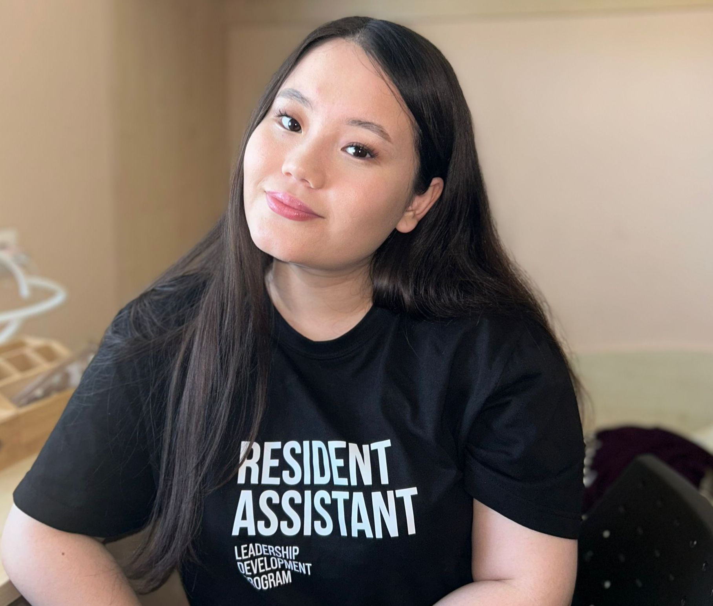

About Me
Coming from Kazakhstan to study abroad was a big step, and becoming an RA pushed me even further out of my comfort zone. I began to see how much of an impact I could have on others by simply being there for them, offering advice, or creating an environment where they could feel comfortable and safe. Therefore, I applied to LDP program where RA position was offered. I started to volounteer to different events by shwoing my eagerness to build a community abd be part of it. I truly eanted to lead with empathy and care, not only by giving orders, but by listening and offering support. Being available to students when they needed someone to talk to, helping them navigate academic stress, or even hosting fun events to lift their spirits—it made me realize how much I enjoy connecting with people on a deeper level.There’s so much I could share about this journey, and the many stories I’ve collected along the way. But perhaps the most important thing I’ve learned is that leadership, for me, is about connection—about understanding that even the smallest act of kindness can have a lasting impact on someone’s life. This was a particularly meaningful experience!
